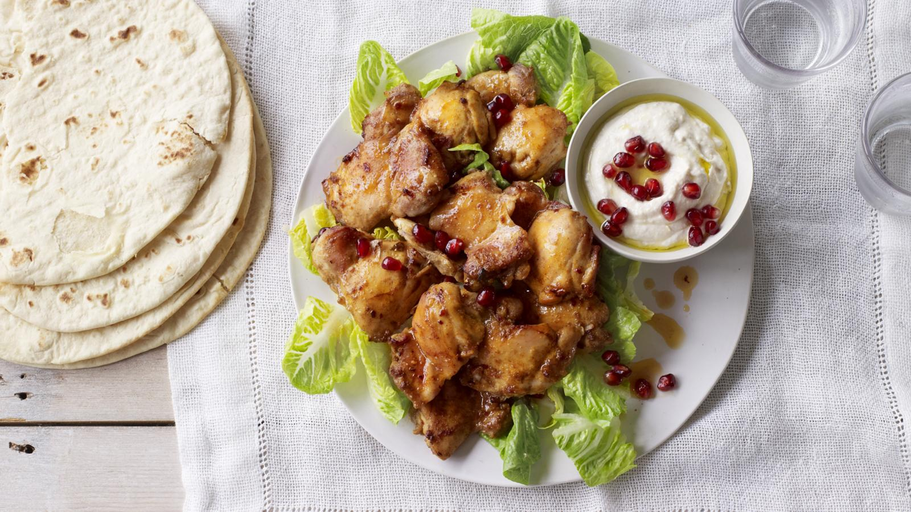

Open Chicken Shawarma Recipe

Description
Ingredients:
For the Chicken Marinade:
- 1 pound (450g) boneless chicken thighs, thinly sliced
- 1/4 cup plain yogurt
- 2 tablespoons olive oil
- 2 cloves garlic, minced
- 1 teaspoon ground cumin
- 1 teaspoon ground coriander
- 1 teaspoon paprika
- 1/2 teaspoon ground turmeric
- 1/2 teaspoon ground cinnamon
- Salt and black pepper to taste
- Juice of 1 lemon
For the Garlic Sauce:
- 1/2 cup mayonnaise
- 2 cloves garlic, minced
- 1 tablespoon fresh lemon juice
- Salt to taste
For Assembling:
- Pita bread or flatbreads
- Sliced cucumbers
- Sliced tomatoes
- Thinly sliced red onions
- Fresh parsley or cilantro leaves, for garnish
- Hot sauce or tahini sauce (optional)
Steps
Marinating the Chicken:
- In a mixing bowl, combine the yogurt, olive oil, minced garlic, ground cumin, ground coriander, paprika, ground turmeric, ground cinnamon, salt, black pepper, and lemon juice.
- Add the sliced chicken thighs to the marinade mixture. Make sure the chicken is well-coated. Cover the bowl and refrigerate for at least 1 hour, allowing the flavors to meld.
Cooking the Chicken:
- Heat a skillet or grill pan over medium-high heat. Add a bit of olive oil to prevent sticking.
- Cook the marinated chicken slices in the hot skillet for about 5-7 minutes on each side or until they are fully cooked and have a nice charred appearance. You can also use a grill for this step.
Preparing the Garlic Sauce:
- In a small bowl, mix together mayonnaise, minced garlic, fresh lemon juice, and a pinch of salt. Adjust the seasoning to your taste. This garlic sauce is often used as a condiment for Shawarma.
Assembling the Open Chicken Shawarma:
- Warm the pita bread or flatbreads in the oven or on a stovetop griddle.
- Lay out the warm bread, and spread a generous amount of the garlic sauce on each piece.
- Place the cooked chicken slices on top of the garlic sauce.
- Add slices of cucumber, tomato, and red onion on top of the chicken.
- Garnish with fresh parsley or cilantro leaves for added flavor.
- If you like it spicy, you can drizzle some hot sauce or tahini sauce over the top.
- Fold the bread over the filling or roll it up like a wrap.
- Serve your homemade Open Chicken Shawarma immediately, and enjoy!